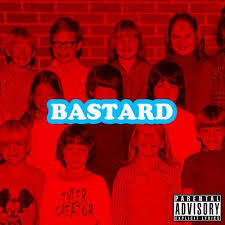
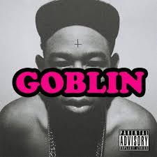
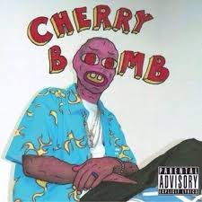
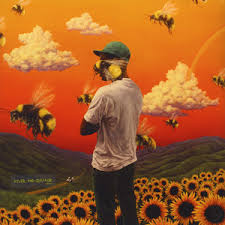

WHO IS TYLER, THE CREATOR
"Tyler, the Creator" was born Tyler Okonma on March 6, 1991. His love of music began at the tender age of 7 when he created imaginary albums complete with the track list. He formed and fronted a rap group called "Odd Future Wolf Gang Kill Them All". The group released their first album in 2008, but Tyler was head on to craft his own album.
In late 2009, he released his debut album titled "Bastard". Led by the title track and "French", the effort landed at No. 32 on Pitchfork Media's list of the Top Albums of 2010. Meanwhile, the second single was ranked 61st on Pitchfork Media's list of the Top 100 Tracks of 2010. As his solo career seemed to be on the track, Tyler put up with his group, going on tours and promoting their second album.
"Goblin" was released on May 10, 2011. It was a concept album, continuing Tyler's dialogues with his fictional therapist Dr. TC, who was first heard on "Bastard". The album, which was led by "Sandwitches", bowed at No. 5 on Billboard 200 and No. 1 on Billboard R&B chart. During this period, not only his music received criticism, but also his homophobic slurs on "Goblin" sparked backlash.
Tyler was not taking a break, announcing that he was due to release his third album titled "Wolf" in 2012. He said it would contain instrumentals that he had made since he was 15. However, it wasn't until the following year that the studio effort arrived. Making its way out via Odd Future Records and RED Distribution, "Wolf" was released on April 2, 2013 and featured Frank Ocean, Pharrell Williams and Erykah Badu among others. It received critical acclaim and debuted at No. 3 on Billboard 200 after selling 90,000 copies in its first week. Tyler spent 2014 mostly on the road as he performed on a series of shows across North America. On March 15, he was arrested for inciting a riot after asking fans to push their way past security guards at a concert on the South by Southwest music festival.
Tyler spent 2014 mostly on the road as he performed on a series of shows across North America. On March 15, he was arrested for inciting a riot after asking fans to push their way past security guards at a concert on the South by Southwest music festival. Tyler's fourth album "Cherry Bomb" was released digitally on April 13, 2015, while the physical copies arrived on April 28 with five different album covers. The set boasted collaborations with massive hip-hop stars, including Kanye West, Lil Wayne and ScHoolBoy Q. To support the album, Tyler was criss-crossing the globe for a world tour, visiting some countries in America, Europe and Asia.
Almost two years since the release of "Cherry Bomb", Tyler released a song titled "Who Dat Boy" featuring A$AP Rock in June 2017 to precede his new album. Following many promotional countdown posts on social media, he announced that the fourth studio album was titled "Scum Fuck Flower Boy" and would be released on July 21. Ahead of the release, some tracks off the album were leaked online. Three songs titled "Foreword", "Garden Shed" and "I Ain't Got Time!" sparked speculations that Tyler would be coming out of the closet as a gay on the new effort. Many people thought it would be very odd for Tyler to come out as he was notoriously known for his homophobic remarks on his music, while some others weren't surprised by the potential revelation. 
"Flower Boy" was released on July 21 as scheduled, receiving widespread critical acclaim by music critics and arriving at No. 2 on Billboard 200 with 106,000 equivalent album units. Furthermore, the self-produced album was named one of the best albums of the year by several music sites, including Billboard, Complex and Exclaim!. It was also nominated for Best Rap Album at the 60th Annual Grammy Awards, but was beat out by Kendrick Lamar's "Damn." In the following year, Tyler released a couple of standalone singles that were titled "Okra" and "435". The former song became his second solo single that charted on Billboard's Hot 100, debuting and peaking at No. 89. Additionally, it peaked at No. 48 and No. 49 on Digital Songs and Hot R&B/Hip Hop Songs charts respectively. Tyler announced a collaboration project with A$AP Rocky called WANG$AP after that, releasing a music video for a remix of Monica's "Knock Knock". The title of the remix was "Potato Salad".